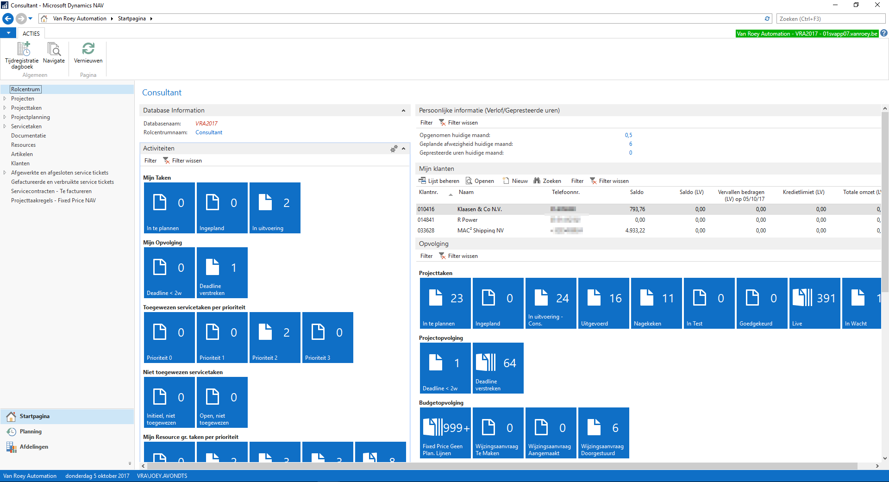

Mijn stage verliep zeer vlot. Het was een fijne ervaring. De collega’s waren erg vriendelijk en de sfeer was geweldig. Ik werd langs overal geholpen, men kwam zelfs interessante items vertellen om te verwerken in mijn taken. Wanneer ik vragen had mocht ik ze altijd meteen stellen.
Ik moet toegeven dat ik veel achter de service-desk heb gestaan, vooral bij de reparaties. Ik vond het fascinerend hoe die jongens het voor elkaar kregen om dag in dag uit gsm’s, laptops, printers enzovoort open te maken en te repareren. Ook heb ik een heleboel nuttige, praktische dingen bijgeleerd die u in mijn verslagen tegen zal komen.
Ik wens u veel leesplezier!
Servicedesk:
Vandaag heb ik vooral de werking van de servicedes bestudeerd:
Hoe gaat men met klanten om? Hoe geven ze de mensen "eerste hulp"? En als belangrijkste, wat doen ze als die "eerste hulp" niet werkt en het toestel binnengenomen wordt?
Ik som even op wat ik vandaag precies heb gezien.
- Kleine problemen worden meteen verholpen aan de balie, bij grotere problemen wordt het toestel binnengenomen.
- Bij het binnennemen van een toestel wordt een ticket gemaakt met de gegevens van de klant en het toestel zelf.
Dit ticket wordt opgeslagen in een databank die toegankelijk is voor alle medewerkers van de reparatiedienst (die zich net achter de service-desk bevindt).
- De reparatiedienst bestaat uit een tiental mensen met elk een andere functie.
Er is:
- iemand die enkel smartphones en tablets repareert
- iemand voor de laptops
- iemand voor de desktops
- iemand voor printers
- enkele personen die enkel telefoontjes beantwoorden en dus helpen van op afstand.
Zij kunnen allemaal aan alle tickets aan. Wanneer ze een toestel gaan repareren, zetten ze het bijhorende ticket in een wachtrij bij hun naam.
Zo kan iedereen zien dat het toestel behandeld wordt.
Wanneer het toestel af is wordt het ticket verplaatst naar een lijst met toestellen die afgehaald kunnen worden, ook per medewerker gesorteerd.
- Deze tickets worden gemaakt en gebruikt met behulp van het programma Microsoft Dynamics Navision.
Elk ticket dat naar de afhaallijst verplaatst wordt, wordt meteen dubbel afgedrukt door een printer op het netwerk die door iedereen gebruikt wordt.
Om het de medewerkers makkelijker te maken wordt de datum enorm groot afgedrukt en is er per maand papier met een andere kleur.
- Aangezien samenwerken belangrijk is, zag ik ook vaak de samenwerkingsruimte van OneNote verschijnen.
Hier kan men real-time info communiceren aan de andere medewerkers zonder recht te staan of telefoontjes te onderbreken. Dit bespaart iedereen een hoop tijd.
- Men gebruikt Gmail om al het nodige e-mailverkeer te regelen en SwyxIt is hun belprogramma.
Iedere werknemer heeft een hoofdtelefoon die aangesloten is aan de computer waaraan ze werken.
Wanneer de vaste personen voor telefoontjes druk bezig zijn kunnen zo ook de andere medewerkers even helpen.
Ik heb ook verschillende dingen bijgeleerd over het repareren van en de inhoud van een toestel.
- Vele vijsjes hebben een verschillende lading. Vandaar moet men ze goed sorteren en op dezelfde plaats terugsteken, anders kan dit zelfs voor kortsluiting op het moederbord zorgen.
- De binnenkant van een samsung-smartphone is veel handiger om te repareren dan een iPhone.
- Een iPad repareren is een nachtmerrie. In sommige gevallen is het enkel het scherm repareren, dat valt nog mee. Maar als er iets onder het scherm stuk is (bijvoorbeeld de batterij) moet men het scherm er eerst afhalen, met 90% kans dat het scherm daarbij breekt.
Op de werkvloer zit de sfeer goed. Er staat constant zachte muziek op, vooral rock-'n-roll en heavy metal, maar ook meezingers en populaire songs. Ook de gezellige babbels ontbreken niet, zowel over werk- als niet werk-gerelateerde onderwerpen.
Bezoek aan klant: Oproep
Vandaag heb ik eerst een halve dag meegewerkt met een hardware-engineer.
Toen hij een oproep kreeg van een nieuwe klant, mocht ik meegaan om te kijken hoe hij het probleem zou oplossen.
Hier vertel ik kort wat er aan de hand was en hoe we dat hebben opgelost, samen met enkele dingen die ik ervan heb opgestoken.
Om geen problemen te veroorzaken bij de klant mocht ik geen foto's maken van deze uitstap.
Ook som ik even de basisstappen op zoals ik ze heb geleerd van de hardware-engineer.
- Bij het binnenkomen eerst vragen stellen om meteen zoveel mogelijk info over het probleem te weten te komen:
Is er iets veranderd of zijn er kabels verstoken voor dat het probleem plaatsvond?
(door kabels zomaar te versteken kan je een loop creëren waardoor het netwerk platgaat)
- Eens in de IT-ruimte of serverafdeling, beginnen we altijd met de hardware na te kijken:
- Zitten er geen belangrijke kabels los?
- Staan er apparaten (zoals de server) uit?
- Flikkeren de lichtjes van de switch wel?
Wanneer het probleem niet meteen duidelijk is, zal je softwarematig een antwoord moeten zoeken.
- Sluit je laptop aan en probeer een IP-adres te krijgen van de DNS.
Wanneer dit niet lukt, moet je extra documentatie gaan zoeken en kijken waar de fout zit.
Als er geen documentatie is kan je eerst misschien raadplegen bij een collega die ooit bij de klant is geweest,
die kan de omgeving misschien een beetje toelichten.
- Indien dit een volledig nieuwe klant is en er dus geen documentatie te vinden is, zal je moeten back-tracen: de bron van het probleem zoeken.
Ook is het erg handig en aan te raden om de gateway te zoeken zodat je dat nadien niet moet doen.
Best geef je je laptop nu een vast IP-adres zodat je verbinding met het internet hebt.
- Nu moet je weer even je ogen gebruiken.
Kijk nog eens even naar alle toestellen:
- Werkt de UPS?
- Werkt de server?
- Staan de switchen op? (flipperende lichtjes --> OK)
- Staan de router en de modem op?
- Werkt de DNS?
- Hierna ga je de server even checken.
- Allereerst start je de server handmatig op. Als er een scherm bij hoort kan je daarmee werken, anders via Remote Desktop.
In dit geval is er geen scherm, dus werken we via Remote Desktop. We verbinden nu (via een programma) met de server alsof we daarmee werken.
Via dat programma kan je de naam of het IP-adres van de server ingeven, gevolgd door een gebruikersnaam en een paswoord.
- Als de server afgesloten of uitgevallen was,
krijg je een ERROR-melding waarbij je moet ingeven waarom de server net afgesloten of uitgevallen was
(in dit geval: Power failure: UPS fail).
- Nu je op de server ingelogd bent, kan je ineens de services nakijken.
Bij vele services zal het statustype op “automatic” staan.
Er zijn ook 2 andere (die ook samen gebruikt kunnen worden)
namelijk:
- “delayed” (de service wordt na een tijdje pas gestart) en
- “triggered” (de service wordt gestart wanneer de server hem nodig heeft).
- Aangezien de server nu opstaat, zal de DNS misschien ook werken.
- Dit kan je testen door je vast IP-adres terug te veranderen naar een automatisch IP-adres.
Als de DNS werkt zal de server nu zelf een IP-adres aan de laptop geven (zoals het hoort).
- Hierna kan je enkele clients testen: pinautomaat, computer aan de balie ...
- Als alles werkt kan het bezoek afgerond worden: bij een nieuwe klant wordt er plaatselijk een bon gemaakt, afgedrukt en getekend. Bestaande klanten hebben een contract.
Ze kopen “werkuren” van VanRoey.be en de gewerkte uren van die dag worden gewoon van het totaal aantal resterende werkuren afgetrokken.
Service-desk:
In de namiddag heb ik nog even bij de service-desk mogen staan. Ook vandaag heb ik daar nuttige, praktische dingen bijgeleerd.
- AMOLED-schermen zijn beter dan LCD-schermen: wanneer AMOLED verbrand raakt herstelt dit zichzelf na een korte tijd.
Bij LCD herstelt dit niet. AMOLED is daardoor wel duurder.
Ook geven AMOLED-schermen kleuren feller en mooier weer.
Samsung gebruikt al 5 jaar de AMOLED schermen, Apple heeft nu net de iPhone 10 uitgebracht, de eerste (!) met het AMOLED scherm.
- Bij het vervangen van bv. een Samsung-scherm of het glaasje van de achterste camera
moet men de lijm
(een dubbezijdig plakkend voorwerp in de vorm van het onderdeel dat bevestigd moet worden)
zeker stevig bevestigen en extra vastdrukken, zodat de lijm (en dus ook het scherm) niet loskomt.
Rondleiding:
Het laatste uurtje heb ik in de eetzaal / vergaderzaal doorgebracht met mijn begeleidster.
We hebben daar de onthaalbrochure van VanRoey.be even doorgenomen.
- Dankzij deze bundel kon ik vandaag ook aan mijn GIP-taak rond de huisstijl van VanRoey.be beginnen.
Binnenkort zal u hier een link vinden om deze taak te bekijken.
- Ik heb nu ook een beter zicht op het doorstromen van de werknemers.
Eerst werken ze meestal 2 jaar aan de Service-desk, daarna gaan ze door naar de support afdeling.
Nadat ze daar ook enkele jaren hebben gewerkt, kunnen ze doorstromen naargelang hun intresse.
Een van die keuzes is bijvoorbeeld om "op de baan" te werken: naar klanten gaan en problemen te plekke oplossen.
Remote Support:
Vandaag heb ik maar een half dagje gewerkt, tot 13u.
Dit idee kwam van het bedrijf zelf omdat ze vaak merken dat studenten in het midden van de week toch wel extra tijd kunnen gebruiken om notities bij te werken.
Maar dat wil niks zeggen dat ik op een half dagje niks heb kunnen doen.
Vandaag kreeg ik zicht op de verschillende softwarepakketten die VanRoey.be gebruikt, en ook kreeg ik info over hun fysieke én virtuele servers.
Jammer genoeg kreeg ik wegens privacy-regels geen plannetje van de server-indeling of screenshots van de programma's.
Wel heb ik een afgewerkt Ticket gekregen van een medewerker zelf. Zo overtreed ik geen privacy-regels en kunnen er geen problemen met klanten ontstaan.
Dit Ticket kan u onderaan terugvinden. Eerst vertel ik kort wat ik vandaag precies gezien heb.
Ticketingsysteem: Microsoft Navision
- Microsoft Navision is het programma dat VanRoey.be gebruikt als Ticketingsysteem. Tickets worden handmatig aangemaakt met input die verkregen wordt via e-mail, telefoon, of via een online portal: de website.
- Eerst maak je een nieuw ticket aan en selecteer je de klant.
- Vervolgens selecteer je het soort incident: Major Incident - Incident - Request Fulfilment
Opmerking: Als alle servers van een bedrijf zoals Torfs (grote klant van VanRoey.be) down gaan,
moet dit onmiddellijk opgelost worden: dit is een Major Incident.
Een Incident zou bijvoorbeeld zijn dat een afdeling van een onderneming geen internet meer heeft.
Een Request Fulfilment is dat één persoon niet meer aan de netwerk-shares kan,
maar hij kan gewoon de computer van een collega gebruiken en zo het probleem even omzeilen:
Geen enorm probleem dus.
- Vervolgens selecteer je een prioriteit: Zeer hoog - Hoog - Normaal - Laag
Opmerking: Lage prioriteit wil zeggen dat er bijvoorbeeld een functie in Word niet meer werkt,
maar dat de klant wel nog worddocumenten kan maken en gebruiken.
Het probleem is niet super erg maar zou wel opgelost moeten worden.
- U merkt dat deze twee items heel nauw verwant zijn met elkaar.
- Hierna worden de gegevens van de gebruiker zelf (en dus niet van de bedrijfsleider of dergelijke) genoteerd, en kunnen er eventuele opmerkingen geplaatst worden.
- Enkele opmerkingen:
- Sommige klanten kopen een SLA-contract. Hier bestaan twee versies: één van 1uur en één van 4uur.
Dit wil zeggen dat wanneer een klant met een probleem dit contract heeft,
VanRoey.be binnen de bijhorende termijn moet reageren op het probleem, anders zullen zij een boete moeten betalen.
De SLA-contracthouders worden dus sneller geholpen dan klanten zonder dit contract.
- Sommige klanten kopen een Service-contract.
Dit houd in dat de klanten 24/24 en 7/7 geholpen moeten worden door VanRoey.be,
dus ook in weekends en vakanties. Hiervoor worden er techniekers stand-by gehouden, dit werkt via een beurtrollensysteem.
- VanRoey.be is momenteel aan het kijken naar een ander systeem waar ik de naam niet van mag weten,
maar met dat programma zouden er veel tickets volautomatisch kunnen worden aangemaakt
en zo zouden er ook screenshots mee opgeslagen kunnen worden (wat tot nu toe niet mogelijk was).
Serverniveau: VMware
- VMware: Hypervisor. Via dit programma zet VanRoey.be zijn virtuele servers op zijn fysieke servers.
- De cluster (groep samenwerkende servers) van VanRoey.be bestaat uit 4 fysieke servers met elk 140GB werkgeheugen (en andere details). Waarom deze servers elk zoveel werkgeheugen hebben is, wanneer er 3 servers uitvallen (uitzonderlijk) moet de overblijvende server alles op zichzelf kunnen draaien.
- VanRoey.be werkt vooral met Microsoft Server 2012, maar ook nog enkele 2008 servers en al enkele 2016 servers.
- Eigen opmerking: Microsoft Server 2016 heeft volledig dezelfde lay-out als Windows 10! Aleen heeft deze de mogelijkheden van een server.
- Een tegenhanger van VMware is bijvoorbeeld HyperV binnen Windows zelf.
Securityniveau
- Fortinet: Security vendor. Vanroey.be heeft niet één, niet geen, maar twee firewalls (waarvan 1 reserve uiteraard) met de eerste failover door Telenet (omdat VanRoey.be een partner is van Telenet), en een tweede door bijvoorbeeld Proximus (hangt er een beetje van af).
Switchingniveau
- VanRoey.be heeft één core-switch, in een cluster met andere switchen. De core-switch is een stack van switchen: Allerlei switchen boven elkaar in één of meerdere kasten vlak naast elkaar. Dit brengt mooie voordelen met zich mee zoals betere performantie, en zo kunnen bijvoorbeeld ook twee poorten van 1gigabit gebundeld worden tot één poort van 2gigabit, wat zorgt voor een mooie Uplink.
Monitoringspakket
- Assurline.vanroey.be is een eigen programma dat VanRoey.be gebruikt om servers van hun klanten te monitoren. Men kan zo effectief alle klanten met hun apparatuur afzonderlijk bekijken en zo meteen zien wanneer er een probleem dreigt aan te komen. Zo kan VanRoey.be tijdig een server-engineer ter plekke laten komen om het probleem op te lossen nog voor dat het zich voor kan doen. Dit bespaart de klant misschien wel een down-time en dus ook heel wat kosten en problemen. Klanten die deze extra feature wensen, moeten uiteraard een betalend contract tekenen.
Navision Support
Vandaag heb ik eerst een halve dag bij Navision Support gestaan.
Daar onderhouden ze vooral de SQL database achter Microsoft Dynamics NAV en maken ze nieuwe tickets, maar beheren ze ook het volledige Microsoft Dynamics NAV pakket (de ERP, enterprise recource planning).
Navision Support beheert de "NAV" mailbox, waarin alle vragen en klachten binnenkomen van mensen die in hun bedrijf ook NAV gebruiken.
Bij sommige, erg belangrijke tickets proberen ze meteen een oplossing te vinden, andere tickets moeten opgelost worden bij Remote Support.
Ik heb hier vooral extra info gekregen over de gebruikte software, en deze zal ik hier met jullie meedelen.
Nieuwe tickets aanmaken is makkelijker dan ooit, de klant kan gewoon naar een webadres surfen,
zijn vraag ingeven en deze vraag volledig volgen tot deze opgelost is. De klant kan perfect volgen wie er nu met zijn vraag bezig is,
en wat ze ermee doen.
Ik heb nog even een screenshot gevraagd aan mijn begeleider zodat jullie toch een idee hebben over hoe NAV eruitziet.
Dit is de menu-pagina:

VanRoey.be gebruikt in de winkels mobiele scanners om bijvoorbeeld stock te bepalen.
Deze scanners staan in directe verbinding met de SQL database achter Microsoft Dynamics NAV. Zo moeten de werknemers niet alles handmatig ingeven en zo besparen ze een hoop werk, tijd en dus ook geld! Deze scanners staan in NAV onder de naam MWS: Mobile solutions.
Greenshot is bij VanRoey.be het standaard programma om screenshots mee te nemen.
SwyxIT is hun belprogramma, zoals ik al eerder heb vermeld.
Extra info: SwyxIT is extra handig te gebruiken om dat je de lijn gewoon kan doorgeven door deze door te slepen naar een andere persoon (drag and drop).
Ook zitten alle personen van alle afdelingen in het programma, waardoor je een klant heel snel naar de juiste persoon kan doorschakelen.
Het intranet van VanRoey.be is een soort van uitgebreide Windows verkenner. Het enige verschil is dat je tags kan toevoegen aan de bestanden.
Dit zorgt ervoor dat je je bestanden kan filteren op tags, waardoor je makkelijker je bestanden terugvindt.
VPN (virtual private network) wordt vaak gebruikt om een klein probleem op een server van op afstand op te lossen, waardoor er geen technieker moet langskomen.
Met behulp van het programma FortiClient kan men de server van op een afstand beheren en de fouten oplossen.
Een andere manier waarop ze dit ook soms doen is via RDP (remote desktop protocol, beter gekend als extern bureaublad).
Zo kan men ook het scherm overnemen en inloggen op de servers.
FTP (file transfer protocol) wordt vaak gebruikt om aan de bestanden van een andere computer te kunnen.
Meestal werkt dit via een FTP-server, beveiligd met een username en password (uiteraard!).
Microsoft Visio Professional is het programma dat men gebruikt om snel gekrabbelde schema's professioneel uit te werken zodat ze die netjes kunnen voorleggen bij de klant.
Ook ben ik nog iets anders tegengekomen, maar eerder informatief.
Sommige klanten hebben een prepaid contract, ze betalen in het begin een grote som geld, en bij elke support die er wordt uitgevoerd wordt het bedrag gewoon inmindering gebracht, tot het uiteindelijk "op" is.
In dat geval kan het bedrijf kiezen om de samenwerking stop te zetten of een nieuw contract aan te kopen.
Remote Support:
In de namiddag heb ik ook nog een paar dingen bijgeleerd op de Remote Support. Deze zijn ook louter informatief.
Wanneer er spam-mails binnenkomen, wordt de zender gewoon toegevoegd aan de block-list: een lijst met alle geblokkeerde zenders.
Bij Office 2007 is er een fout gebeurt bij een update waardoor Outlook gedeeltelijk in het Zweeds komt te staan.
Dit is makkelijk op te lossen door de update ongedaan te maken en Outlook.exe / renamefoldernames uit te voeren.
Servicedesk:
Vandaag heb ik weinig nieuws gezien, maar dat wil niet zeggen dat ik niks heb gedaan!
Ik heb extra foto's genomen en zoals altijd mijn ogen opengehouden.
Eerst kon ik wat laptop-reparaties bekijken en nadien heb ik uitgebreid de tijd genomen om eens goed te babbelen met mijn collega's.
Ik heb de banden nog wat verstevigd zodat er misschien een goed woordje gedaan kan worden over mij, wanneer ik later misschien studentenjob of dergelijke bij VanRoey.be wil doen.
Met dank aan een van mijn collega's heb ik de nodige moed bij elkaar geraapt om deze 100% responsive site te ontwerpen voor mijn GIP.
Zo kan ik mijn eindwerk in stijl maken en als kers op de taart extra inzet, interesse en kennis tonen.
Met fotoshop kon ik al een aantal foto's bewerken zodat ze klaar zijn om in mijn GIP-site te gebruiken.
Ondertussen heb ik ook al veel gewerkt aan andere taken en verslagen.
Al bij al is het nog een drukke dag geworden (net zoals de andere dagen trouwens), maar het was zeker een van de fijnste dagen.